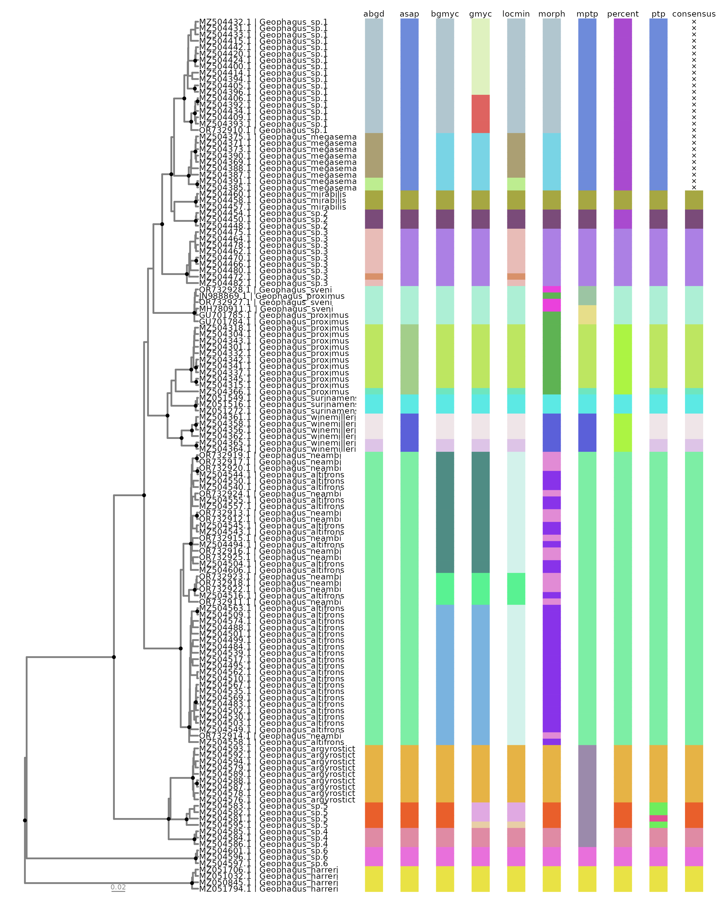

Rationale
There are at least three major steps when doing single-locus species delimitation analysis:
Preparing your data;
Running species delimitation analysis;
Visualizing results.
The rationale of delimtools is to provide helper
functions for all these steps. This guide introduces you to these
functions and shows how to apply them to your datasets. In this
tutorial, we will use the geophagus dataset provided in
this package. This dataset contains 354 cytochrome c oxidase sequences
of the Geophagus sensu stricto species group downloaded from
GenBank. Most of these sequences are from the data analysed by Ximenes
et al. (2021) and is documented in ?geophagus.
Preparing your data
Usually, our main source of information for single-locus species
delimitation analysis is a FASTA
formated file containing nucleotide sequences. The most straighforward
way to import a FASTA formated file to R Environment is by using
ape::read.FASTA():
path_to_file <- system.file("extdata/geophagus.fasta", package = "delimtools")
geophagus <- ape::read.FASTA(file= path_to_file)Since geophagus dataset is provided along with
delimtools, one can simply call it directly:
geophagus
#> 354 DNA sequences in binary format stored in a list.
#>
#> All sequences of same length: 690
#>
#> Labels:
#> MZ504301.1
#> MZ504328.1
#> MZ504318.1
#> MZ504313.1
#> MZ504311.1
#> MZ504312.1
#> ...
#>
#> Base composition:
#> a c g t
#> 0.237 0.282 0.178 0.303
#> (Total: 244.26 kb)Check identifiers across files
Although the header of each sequence in a FASTA file may contain
information about the source organism from which the sequence was
obtained, we recommend storing this information in a tabular format file
(e.g. csv, tsv, xlsx, etc.),
using an unique sequence identifier for both FASTA and tabular files. We
can have a glimpse of our sequence metadata by checking
geophagus_info:
dplyr::glimpse(geophagus_info)
#> Rows: 354
#> Columns: 19
#> $ scientificName <chr> "Geophagus_altifrons", "Geophagus_altifrons", "G…
#> $ scientificNameGenBank <chr> "Geophagus altifrons", "Geophagus altifrons", "G…
#> $ class <chr> "Teleostei", "Teleostei", "Teleostei", "Teleoste…
#> $ order <chr> "Cichliformes", "Cichliformes", "Cichliformes", …
#> $ family <chr> "Cichlidae", "Cichlidae", "Cichlidae", "Cichlida…
#> $ genus <chr> "Geophagus", "Geophagus", "Geophagus", "Geophagu…
#> $ dbid <dbl> 2063684375, 2063684465, 2063684523, 2063684453, …
#> $ gbAccession <chr> "MZ504486.1", "MZ504531.1", "MZ504560.1", "MZ504…
#> $ gene <chr> "coi", "coi", "coi", "coi", "coi", "coi", "coi",…
#> $ length <dbl> 659, 699, 627, 612, 552, 654, 627, 651, 666, 609…
#> $ organelle <chr> "mitochondrion", "mitochondrion", "mitochondrion…
#> $ catalogNumber <chr> "1614", "17578", "1616", "1194", "2748", "1610",…
#> $ country <chr> "Brazil: Tapajós- Jacareacanga- Pará", "Brazil: …
#> $ publishedAs <chr> "Mapping the hidden diversity of the Geophagus s…
#> $ publishedIn <chr> "Unpublished", "Unpublished", "Unpublished", "Un…
#> $ publishedBy <chr> "Ximenes,A.M.", "Ximenes,A.M.", "Ximenes,A.M.", …
#> $ date <chr> "25-OCT-2021", "25-OCT-2021", "25-OCT-2021", "25…
#> $ decimalLatitude <dbl> -6.276008, -3.449100, -6.276008, -1.501489, -6.1…
#> $ decimalLongitude <dbl> -57.74000, -57.73533, -57.74000, -52.68211, -48.…It’s desirable that both our FASTA file and our metadata have the
same dimensions and no abscent, mistyped, or duplicated sequence
identifiers within and between these files. Let’s check if our FASTA
file and our metadata has the same sequence identifiers using
delimtools::check_identifiers():
check_identifiers(data= geophagus_info, identifier= "gbAccession", dna= geophagus)
#> ✔ Identifiers are the same across files.Now, let’s omit the first 10 sequences and check again:
check_identifiers(geophagus_info, "gbAccession", geophagus[11:354])
#> Error in `check_identifiers()`:
#> ! Identifiers are not of equal length:
#> ✖ You've supplied inputs with size lengths of 354 and 344.
#> ℹ Identifiers absent in `geophagus_info`:
#>
#> ℹ Identifiers absent in `geophagus[11:354]`:
#> MZ504313.1, MZ504328.1, MZ504311.1, MZ504299.1, MZ504318.1, MZ504309.1,
#> MZ504301.1, MZ504337.1, MZ504312.1, MZ504341.1Notice that check_identifiers will not
evaluate if sequence identifiers in FASTA and metadata appears in the
same order:
identical(names(geophagus), geophagus_info$gbAccession)
#> [1] FALSE
all.equal(names(geophagus), geophagus_info$gbAccession)
#> [1] "351 string mismatches"Many other functions of delimtools relies on a tabular
format file like geophagus_info, so please make sure to
have one prior to any analysis.
Cleaning DNA and Haplotype Collapsing
Sometimes, our alignment file may contain non ACTG bases,
like ambiguities (N, R, Y, etc), gaps (-), or missing data (?) which may
have unintended consequences later. Using clean_dna, we can
find which sequences may need further manual checking.
clean_dna(geophagus)
#> Warning: ⚠ You have missing data "('N','-' '?')" or ambiguity inside your sequence, i.e.
#> not padding the ends, and this may have unintended consequences later, as they
#> have now been removed!
#> ℹ The names of the samples are bellow.
#> GU701784.1, GU701785.1
#> 354 DNA sequences in binary format stored in a list.
#>
#> Mean sequence length: 646.198
#> Shortest sequence: 505
#> Longest sequence: 690
#>
#> Labels:
#> MZ504301.1
#> MZ504328.1
#> MZ504318.1
#> MZ504313.1
#> MZ504311.1
#> MZ504312.1
#> ...
#>
#> Base composition:
#> a c g t
#> 0.237 0.282 0.178 0.303
#> (Total: 228.75 kb)Notice that clean_dna will remove both
leading and trailing gaps from the alignment, being necessary to realign
the file after that.
The presence of identical sequences (haplotypes) in our dataset may
overestimate the number of lineages detected by tree-based species
delimitation methods (e.g. bGMYC, GMYC, PTP, mPTP). Prior to
phylogenetic tree inference for these analyses, it is a best practice to
remove (collapse) these sequences into its unique haplotypes. To
collapse an alignment into its unique haplotypes, you may use the
hap_collapse function with default settings:
hap_collapse(geophagus, clean= TRUE, collapseSubstrings = TRUE)
#> Warning: ⚠ You have missing data "('N','-' '?')" or ambiguity inside your sequence, i.e.
#> not padding the ends, and this may have unintended consequences later, as they
#> have now been removed!
#> ℹ The names of the samples are bellow.
#> GU701784.1, GU701785.1
#> 137 DNA sequences in binary format stored in a list.
#>
#> Mean sequence length: 643.007
#> Shortest sequence: 505
#> Longest sequence: 690
#>
#> Labels:
#> MZ504301.1
#> MZ504318.1
#> MZ504341.1
#> MZ504337.1
#> MZ504342.1
#> MZ504304.1
#> ...
#>
#> Base composition:
#> a c g t
#> 0.238 0.281 0.177 0.304
#> (Total: 88.09 kb)Notice that from the initial 354 DNA sequences,
hap_collapse returned a total of 137 unique DNA sequences.
This result may vary if setting collapseSubstrings to
FALSE:
hap_collapse(geophagus, clean=TRUE, collapseSubstrings = FALSE)
#> Warning: ⚠ You have missing data "('N','-' '?')" or ambiguity inside your sequence, i.e.
#> not padding the ends, and this may have unintended consequences later, as they
#> have now been removed!
#> ℹ The names of the samples are bellow.
#> GU701784.1, GU701785.1
#> 246 DNA sequences in binary format stored in a list.
#>
#> Mean sequence length: 639.764
#> Shortest sequence: 505
#> Longest sequence: 690
#>
#> Labels:
#> MZ504301.1
#> MZ504328.1
#> MZ504318.1
#> MZ504341.1
#> MZ504337.1
#> MZ504299.1
#> ...
#>
#> Base composition:
#> a c g t
#> 0.237 0.282 0.177 0.303
#> (Total: 157.38 kb)After setting collapseSubstrings to FALSE,
we obtained 246 unique DNA sequences. These additional 109 sequences are
in reality shorter but identical sequences which in most cases varies
only by the presence of leading and trailing gaps. By setting both
clean_dna and collapseSubstrings to
TRUE, we ensure the removal of these leading and trailing
gaps from sequences before collapsing these sequences into unique
haplotypes.
Warning: be carefull when using
collapseSubstrings when using non-coding genes
(e.g. 12S/16S rRNAs)
To visualize the relationships between these unique haplotypes and
the samples, we may use the haplotype_tbl function:
haplotype_tbl(geophagus, clean= TRUE, collapseSubstrings = TRUE, verbose = FALSE)
#> # A tibble: 137 × 3
#> labels n_seqs collapsed
#> <chr> <dbl> <chr>
#> 1 MZ504318.1 38 MZ504328.1, MZ504313.1, MZ504311.1, MZ504312.1, MZ504309.1…
#> 2 MZ504540.1 20 MZ504505.1, MZ504553.1, MZ504554.1, MZ504552.1, MZ504542.1…
#> 3 MZ504420.1 19 MZ504417.1, MZ504437.1, MZ504425.1, MZ504427.1, MZ504422.1…
#> 4 MZ504488.1 16 MZ504538.1, KU568830.1, JN026709.1, MZ504522.1, MZ504523.1…
#> 5 MZ504484.1 15 MZ504496.1, MZ504487.1, MZ504573.1, MZ504560.1, MZ504497.1…
#> 6 MZ504462.1 14 MZ504479.1, MZ504477.1, MZ504481.1, MZ504476.1, MZ504463.1…
#> 7 MZ504375.1 13 MZ504372.1, MZ504382.1, MZ504381.1, MZ504379.1, MZ504383.1…
#> 8 MZ504535.1 8 MZ504515.1, MZ504525.1, MZ504533.1, MZ504534.1, MZ504536.1…
#> 9 MZ504393.1 8 MZ504445.1, MZ504413.1, MZ504407.1, MZ504408.1, MZ504410.1…
#> 10 MZ504400.1 6 MZ504404.1, MZ504401.1, MZ504402.1, MZ504403.1, MZ504399.1
#> # ℹ 127 more rowsYou may also collapse other types of information by using
collapse_others. We can collapse our metadata to see which
species and sampling localities are associated with each haplotype:
haps_df <- haplotype_tbl(geophagus, verbose = FALSE)
collapse_others(data= geophagus_info,
hap_tbl= haps_df,
labels= "gbAccession",
cols= c("scientificName", "country"))
#> # A tibble: 137 × 5
#> labels n_seqs collapsed collapsed_scientific…¹ collapsed_country
#> <chr> <dbl> <chr> <chr> <chr>
#> 1 MZ504318.1 38 MZ504328.1, MZ504… Geophagus_proximus Brazil: Lago do …
#> 2 MZ504540.1 20 MZ504505.1, MZ504… Geophagus_altifrons, … Brazil: Tocantin…
#> 3 MZ504420.1 19 MZ504417.1, MZ504… Geophagus_sp.1 Brazil: Branco- …
#> 4 MZ504488.1 16 MZ504538.1, KU568… Geophagus_altifrons, … Brazil: Água Boa…
#> 5 MZ504484.1 15 MZ504496.1, MZ504… Geophagus_altifrons Brazil: São Seba…
#> 6 MZ504462.1 14 MZ504479.1, MZ504… Geophagus_sp.3 Brazil: Iriri- P…
#> 7 MZ504375.1 13 MZ504372.1, MZ504… Geophagus_megasema Brazil: Mamirauá…
#> 8 MZ504535.1 8 MZ504515.1, MZ504… Geophagus_altifrons Brazil: Maués-Aç…
#> 9 MZ504393.1 8 MZ504445.1, MZ504… Geophagus_sp.1 Brazil: Xingu- u…
#> 10 MZ504400.1 6 MZ504404.1, MZ504… Geophagus_sp.1 Brazil: Demeni- …
#> # ℹ 127 more rows
#> # ℹ abbreviated name: ¹collapsed_scientificNameRunning species delimitation analysis
After preparing your data (alignments and phylogenetic trees), the
next step it to run species delimitation analyses and combine them into
a single tbl_df. Please check Installing
Species Delimitation Software to know which sofware
delimtools support. Check the examples below.
ABGD
We can run ABGD by using the abgd_tbl function. This
function requires a PATH for a FASTA file as input for analysis and a
PATH for the ABGD executable:
dat_all_ali <- here::here("vignettes/geophagus.fasta")
abgd_df <- abgd_tbl(infile= dat_all_ali,
exe= "/usr/local/bin/abgd",
model= 3,
outfolder= here::here("vignettes"),
haps= haps_df$labels)
#> ℹ ABGD files are located in directory '/home/pedro/Documentos/Projetos/Packages/delimtools/vignettes'.Then we can check abgd_df
print(abgd_df)
#> # A tibble: 137 × 2
#> labels abgd
#> <chr> <int>
#> 1 MZ504301.1 1
#> 2 MZ504318.1 1
#> 3 MZ504341.1 1
#> 4 MZ504337.1 1
#> 5 MZ504342.1 1
#> 6 MZ504304.1 1
#> 7 MZ504332.1 1
#> 8 MZ504343.1 1
#> 9 MZ504315.1 1
#> 10 MZ504345.1 1
#> # ℹ 127 more rowsASAP
We can run ASAP by using the asap_tbl function. This
function requires a PATH for a FASTA file as input for analysis and a
PATH for the ASAP executable:
asap_df <- asap_tbl(infile= dat_all_ali,
exe= "/usr/local/bin/asap",
haps= haps_df$labels,
outfolder = here::here("vignettes"),
model= 3)
#> ℹ ASAP files are located in directory '/home/pedro/Documentos/Projetos/Packages/delimtools/vignettes'.
print(asap_df)
#> # A tibble: 137 × 2
#> labels asap
#> <chr> <int>
#> 1 MZ504301.1 1
#> 2 MZ504318.1 1
#> 3 MZ504332.1 1
#> 4 MZ504343.1 1
#> 5 MZ504304.1 1
#> 6 MZ504342.1 1
#> 7 MZ504341.1 1
#> 8 MZ504315.1 1
#> 9 MZ504345.1 1
#> 10 MZ504337.1 1
#> # ℹ 127 more rowsNote: You should always indicate full PATH for
infile, exe, and outfolder in
ASAP for full functioning.
GMYC
We can run GMYC analysis by using the splits function
gmyc. This function requires an ultrametric tree file of
class phylo as input for analysis. We can convert our
geophagus_beast treedata object into a phylo
object by using ape::as.phylo:
gmyc_res <- splits::gmyc(as.phylo(geophagus_beast), method= "single")Now, lets check the summary:
summary(gmyc_res)
#> Result of GMYC species delimitation
#>
#> method: single
#> likelihood of null model: 995.0483
#> maximum likelihood of GMYC model: 1010.027
#> likelihood ratio: 29.95778
#> result of LR test: 3.124278e-07***
#>
#> number of ML clusters: 19
#> confidence interval: 18-22
#>
#> number of ML entities: 21
#> confidence interval: 19-25
#>
#> threshold time: -0.0164289GMYC outputs a list containing several results. We can use
gmyc_tbl to extract the clusters in a tbl_df
format:
bGMYC
We can run bGMYC analysis by using the bGMYC function
bgmyc.singlephy. This function requires an ultrametric tree
file of class phylo as input for analysis. We can convert
our geophagus_beast treedata object into a
phylo object by using ape::as.phylo:
bgmyc_res <- bGMYC::bgmyc.singlephy(as.phylo(geophagus_beast),
mcmc= 11000,
burnin= 1000,
thinning= 100,
t1= 2,
t2= Ntip(as.phylo(geophagus_beast)),
start= c(1, 0.5, 50))bGMYC outputs a list containing several results. We can use
bgmyc_tbl to extract the clusters in a tbl_df
format using 0.05 as posterior probability threshold for
clustering samples into species partitions:
bgmyc_df <- bgmyc_tbl(bgmyc_res, ppcutoff = 0.05)
print(bgmyc_df)
#> # A tibble: 137 × 2
#> labels bgmyc
#> <chr> <int>
#> 1 GU701784.1 1
#> 2 GU701785.1 1
#> 3 JN988869.1 1
#> 4 MH780911.1 1
#> 5 OR732927.1 1
#> 6 OR732928.1 1
#> 7 MZ050845.1 2
#> 8 MZ051032.1 2
#> 9 MZ051706.1 2
#> 10 MZ051794.1 2
#> # ℹ 127 more rowsPTP and mPTP
We can run both PTP and mPTP analysis by using the
mptp_tbl. This function requires a PATH for a phylogram as
input for analysis, a PATH for the mptp executable, a string specifying
which method to use (“multi” for mPTP; “single” for PTP), and a minimum
branch length (minbrlen) for computations:
mptp_df <- mptp_tbl(infile= here::here("vignettes/geophagus_raxml.nwk"),
exe= "/usr/local/bin/mptp",
method= "multi",
minbrlen= 2e-06,
outfolder = here::here("vignettes"),
delimname = "mptp")
#> mptp 0.2.5_linux_x86_64, 16GB RAM, 4 cores
#> https://github.com/Pas-Kapli/mptp
#>
#> Parsing tree file...
#> Loaded rooted tree...
#> Number of edges greater than minimum branch length: 159 / 272
#> Score Null Model: 681.702507
#> Best score for multi coalescent rate: 748.771263
#> LRT computed p-value: 0.000000
#> Writing delimitation file /home/pedro/Documentos/Projetos/Packages/delimtools/vignettes/geophagus_raxml.nwk.mptp.multi.txt ...
#> Number of delimited species: 14
#> Creating SVG delimitation file /home/pedro/Documentos/Projetos/Packages/delimtools/vignettes/geophagus_raxml.nwk.mptp.multi.svg ...
#> Done...
#> ℹ mPTP files are located in '/home/pedro/Documentos/Projetos/Packages/delimtools/vignettes'.
ptp_df <- mptp_tbl(infile= here::here("vignettes/geophagus_raxml.nwk"),
exe= "/usr/local/bin/mptp",
method= "single",
minbrlen= 2e-06,
outfolder = here::here("vignettes"),
delimname = "ptp")
#> mptp 0.2.5_linux_x86_64, 16GB RAM, 4 cores
#> https://github.com/Pas-Kapli/mptp
#>
#> Parsing tree file...
#> Loaded rooted tree...
#> Number of edges greater than minimum branch length: 159 / 272
#> Score Null Model: 681.702507
#> Best score for single coalescent rate: 747.727196
#> LRT computed p-value: 0.000000
#> Writing delimitation file /home/pedro/Documentos/Projetos/Packages/delimtools/vignettes/geophagus_raxml.nwk.mptp.single.txt ...
#> Number of delimited species: 17
#> Creating SVG delimitation file /home/pedro/Documentos/Projetos/Packages/delimtools/vignettes/geophagus_raxml.nwk.mptp.single.svg ...
#> Done...
#> ℹ mPTP files are located in '/home/pedro/Documentos/Projetos/Packages/delimtools/vignettes'.To estimate a minimum branch length for your dataset, use
minbr_len:
min_brlen(as.phylo(geophagus_raxml))
#> ℹ Printing 5 smallest tip-to-tip distances in a tree with 137 tips ...
#>
#>
#> |dist | n|
#> |:--------|--:|
#> |0.000002 | 12|
#> |0.000003 | 2|
#> |0.000004 | 6|
#> |0.000005 | 2|
#> |0.001561 | 2|Local Minima
We can run the Local Minima analysis by using the spider
function localMinima. This function requires a genetic
distance matrix as input for analysis:
mat <- dist.dna(geophagus, model= "raw", pairwise.deletion = TRUE)
lmin <- spider::localMinima(mat)
#> [1] 0.006828358 0.018994392 0.040791871 0.055999413 0.067151612 0.082105695We can plot the lmin object to select the threshold. We
will use the first value of the lmin object:
Since Local Minima output is a numeric vector, we need
to use locmin_tbl to get our species partitions in a
tbl_df format:
locmin_df <- locmin_tbl(mat,
threshold= lmin$localMinima[1],
haps= haps_df$labels)
print(locmin_df)
#> # A tibble: 137 × 2
#> labels locmin
#> <chr> <int>
#> 1 MZ504301.1 1
#> 2 MZ504318.1 1
#> 3 MZ504341.1 1
#> 4 MZ504337.1 1
#> 5 MZ504342.1 1
#> 6 MZ504304.1 1
#> 7 MZ504332.1 1
#> 8 MZ504343.1 1
#> 9 MZ504315.1 1
#> 10 MZ504345.1 1
#> # ℹ 127 more rowsWe can also use patristic distances to generate species partitions as
well. Using the geophagus_beast tree, we can apply a
threshold to classify tips of the tree by using its branch lengths:
tr_mat <- ape::cophenetic.phylo(as.phylo(geophagus_beast)) |> as.dist()
tr_lmin <- spider::localMinima(tr_mat)
#> [1] 0.1114476 0.2020889 0.3527801
plot(tr_lmin) |> abline(v=tr_lmin$localMinima[1],col="red")
treedist_df <- locmin_tbl(tr_mat,
threshold = tr_lmin$localMinima[1],
delimname = "treedist")
print(treedist_df)
#> # A tibble: 137 × 2
#> labels treedist
#> <chr> <int>
#> 1 GU701784.1 1
#> 2 GU701785.1 1
#> 3 JN988869.1 1
#> 4 MH780911.1 1
#> 5 OR732927.1 1
#> 6 OR732928.1 1
#> 7 MZ050845.1 2
#> 8 MZ051032.1 2
#> 9 MZ051706.1 2
#> 10 MZ051794.1 2
#> # ℹ 127 more rowsFixed threshold
We can use locmin_tbl to create a species partition
using a fixed threshold. For example, we can use a threshold of 2% to
generate species partitions:
percent_df <- locmin_tbl(mat, threshold = 0.02, haps= haps_df$labels, delimname = "percent")
print(percent_df)
#> # A tibble: 137 × 2
#> labels percent
#> <chr> <int>
#> 1 MZ504301.1 1
#> 2 MZ504318.1 1
#> 3 MZ504341.1 1
#> 4 MZ504337.1 1
#> 5 MZ504342.1 1
#> 6 MZ504304.1 1
#> 7 MZ504332.1 1
#> 8 MZ504343.1 1
#> 9 MZ504315.1 1
#> 10 MZ504345.1 1
#> # ℹ 127 more rowsMorphology
We can also turn species ranks or results from morphological analysis
into a species partition by using morph_tbl. For
geophagus dataset, we will use the scientific names in
geophagus_info:
morph_df <- morph_tbl(labels= geophagus_info$gbAccession,
sppVector= geophagus_info$scientificName) |>
dplyr::filter(labels %in% haps_df$labels)
print(morph_df)
#> # A tibble: 137 × 2
#> labels morph
#> <chr> <int>
#> 1 MZ504501.1 1
#> 2 MZ504504.1 1
#> 3 MZ504510.1 1
#> 4 MZ504543.1 1
#> 5 MZ504545.1 1
#> 6 MZ504488.1 1
#> 7 MZ504483.1 1
#> 8 MZ504558.1 1
#> 9 MZ504484.1 1
#> 10 MZ504502.1 1
#> # ℹ 127 more rowsJoining Species Delimitation Outputs
Since we have several species partitions, we need to merge them into
a single data frame in order to visualize the results. However, since
each method has its own rankings, we need to recode them prior to any
further analysis. For this task, we can use delim_join.
This function takes a list of species partitions as input
in order to merge and recode all species partitions:
all_delims <- list(abgd_df, asap_df, bgmyc_df, gmyc_df,
locmin_df, morph_df, mptp_df, ptp_df,
percent_df, treedist_df)
all_delims_df <- delim_join(all_delims)We can summarise the all_delims_df object by using the
report_delim function:
report_delim(all_delims_df)
#> ℹ Joined delimitations have a total of 45 unique species partitions.
#> ℹ Check below the number of species partitions per method:
#>
#>
#> |method | partitions|
#> |:--------|----------:|
#> |gmyc | 21|
#> |locmin | 21|
#> |abgd | 19|
#> |bgmyc | 19|
#> |ptp | 17|
#> |morph | 16|
#> |asap | 14|
#> |mptp | 14|
#> |percent | 12|
#> |treedist | 7|
#> # A tibble: 137 × 11
#> labels abgd asap bgmyc gmyc locmin morph mptp percent ptp treedist
#> <chr> <chr> <chr> <chr> <chr> <chr> <chr> <chr> <chr> <chr> <chr>
#> 1 MZ504301.1 sp1 sp20 sp1 sp1 sp1 sp36 sp1 sp40 sp1 sp44
#> 2 MZ504318.1 sp1 sp20 sp1 sp1 sp1 sp36 sp1 sp40 sp1 sp44
#> 3 MZ504341.1 sp1 sp20 sp1 sp1 sp1 sp36 sp1 sp40 sp1 sp44
#> 4 MZ504337.1 sp1 sp20 sp1 sp1 sp1 sp36 sp1 sp40 sp1 sp44
#> 5 MZ504342.1 sp1 sp20 sp1 sp1 sp1 sp36 sp1 sp40 sp1 sp44
#> 6 MZ504304.1 sp1 sp20 sp1 sp1 sp1 sp36 sp1 sp40 sp1 sp44
#> 7 MZ504332.1 sp1 sp20 sp1 sp1 sp1 sp36 sp1 sp40 sp1 sp44
#> 8 MZ504343.1 sp1 sp20 sp1 sp1 sp1 sp36 sp1 sp40 sp1 sp44
#> 9 MZ504315.1 sp1 sp20 sp1 sp1 sp1 sp36 sp1 sp40 sp1 sp44
#> 10 MZ504345.1 sp1 sp20 sp1 sp1 sp1 sp36 sp1 sp40 sp1 sp44
#> # ℹ 127 more rowsWe can also check the match ratio statistics of Ahrens et al (2014)
using match_ratio:
match_ratio(all_delims_df) |>
dplyr::arrange(dplyr::desc(match_ratio)) |>
print(n=Inf)
#> # A tibble: 45 × 5
#> pairs delim_1 delim_2 n_match match_ratio
#> <chr> <int> <int> <int> <dbl>
#> 1 abgd-locmin 19 21 17 0.85
#> 2 bgmyc-gmyc 19 21 17 0.85
#> 3 asap-percent 14 12 10 0.77
#> 4 abgd-bgmyc 19 19 14 0.74
#> 5 abgd-ptp 19 17 13 0.72
#> 6 bgmyc-ptp 19 17 13 0.72
#> 7 asap-ptp 14 17 11 0.71
#> 8 gmyc-locmin 21 21 15 0.71
#> 9 bgmyc-locmin 19 21 14 0.7
#> 10 gmyc-ptp 21 17 13 0.68
#> 11 asap-morph 14 16 10 0.67
#> 12 mptp-ptp 14 17 10 0.65
#> 13 asap-mptp 14 14 9 0.64
#> 14 bgmyc-morph 19 16 11 0.63
#> 15 locmin-ptp 21 17 12 0.63
#> 16 percent-ptp 12 17 9 0.62
#> 17 abgd-asap 19 14 10 0.61
#> 18 asap-bgmyc 14 19 10 0.61
#> 19 abgd-gmyc 19 21 12 0.6
#> 20 abgd-percent 19 12 9 0.58
#> 21 bgmyc-percent 19 12 9 0.58
#> 22 morph-percent 16 12 8 0.57
#> 23 abgd-morph 19 16 9 0.51
#> 24 asap-gmyc 14 21 9 0.51
#> 25 gmyc-morph 21 16 9 0.49
#> 26 abgd-mptp 19 14 8 0.48
#> 27 bgmyc-mptp 19 14 8 0.48
#> 28 gmyc-percent 21 12 8 0.48
#> 29 morph-ptp 16 17 8 0.48
#> 30 morph-mptp 16 14 7 0.47
#> 31 asap-locmin 14 21 8 0.46
#> 32 gmyc-mptp 21 14 8 0.46
#> 33 mptp-percent 14 12 6 0.46
#> 34 locmin-morph 21 16 8 0.43
#> 35 locmin-percent 21 12 7 0.42
#> 36 percent-treedist 12 7 4 0.42
#> 37 locmin-mptp 21 14 7 0.4
#> 38 asap-treedist 14 7 4 0.38
#> 39 mptp-treedist 14 7 4 0.38
#> 40 ptp-treedist 17 7 4 0.33
#> 41 abgd-treedist 19 7 4 0.31
#> 42 bgmyc-treedist 19 7 3 0.23
#> 43 gmyc-treedist 21 7 3 0.21
#> 44 locmin-treedist 21 7 3 0.21
#> 45 morph-treedist 16 7 2 0.17By checking the results, all comparisons including treedist have a
low match_ratio. Since species partitions with very low
match_ratio values can impact consensus calculations, we
will remove treedist before visualizing our results
all_delims_df <- dplyr::select(all_delims_df, -treedist)
report_delim(all_delims_df)
#> ℹ Joined delimitations have a total of 43 unique species partitions.
#> ℹ Check below the number of species partitions per method:
#>
#>
#> |method | partitions|
#> |:-------|----------:|
#> |gmyc | 21|
#> |locmin | 21|
#> |abgd | 19|
#> |bgmyc | 19|
#> |ptp | 17|
#> |morph | 16|
#> |asap | 14|
#> |mptp | 14|
#> |percent | 12|
#> # A tibble: 137 × 10
#> labels abgd asap bgmyc gmyc locmin morph mptp percent ptp
#> <chr> <chr> <chr> <chr> <chr> <chr> <chr> <chr> <chr> <chr>
#> 1 MZ504301.1 sp1 sp20 sp1 sp1 sp1 sp36 sp1 sp40 sp1
#> 2 MZ504318.1 sp1 sp20 sp1 sp1 sp1 sp36 sp1 sp40 sp1
#> 3 MZ504341.1 sp1 sp20 sp1 sp1 sp1 sp36 sp1 sp40 sp1
#> 4 MZ504337.1 sp1 sp20 sp1 sp1 sp1 sp36 sp1 sp40 sp1
#> 5 MZ504342.1 sp1 sp20 sp1 sp1 sp1 sp36 sp1 sp40 sp1
#> 6 MZ504304.1 sp1 sp20 sp1 sp1 sp1 sp36 sp1 sp40 sp1
#> 7 MZ504332.1 sp1 sp20 sp1 sp1 sp1 sp36 sp1 sp40 sp1
#> 8 MZ504343.1 sp1 sp20 sp1 sp1 sp1 sp36 sp1 sp40 sp1
#> 9 MZ504315.1 sp1 sp20 sp1 sp1 sp1 sp36 sp1 sp40 sp1
#> 10 MZ504345.1 sp1 sp20 sp1 sp1 sp1 sp36 sp1 sp40 sp1
#> # ℹ 127 more rowsVisualizing Results
We can visualize the results by using delim_autoplot.
This function will plot a phylogenetic tree alongside with the results
contained in all_delims_df. We will use the
geophagus_beast tree to visualize the results:
# customize tip labels of the tree
tip_tab <- geophagus_info |>
dplyr::filter(gbAccession %in% geophagus_beast@phylo$tip.label) |>
dplyr::mutate(labs= glue::glue("{gbAccession} | {scientificName}")) |>
dplyr::select(gbAccession, labs, scientificName)
# create a customized color palette
cols <- delim_brewer(delim= all_delims_df, package="randomcoloR", seed=42)
# plot
delim_autoplot(all_delims_df,
geophagus_beast,
consensus= TRUE,
n_match = 5,
tbl_labs= tip_tab,
col_vec= cols,
hexpand= 0.7,
widths = c(0.5, 0.5))